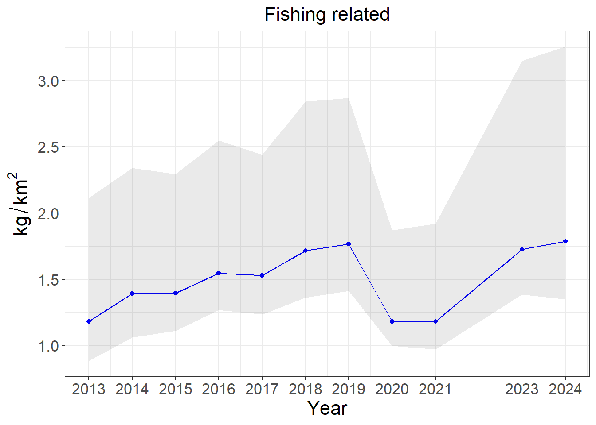
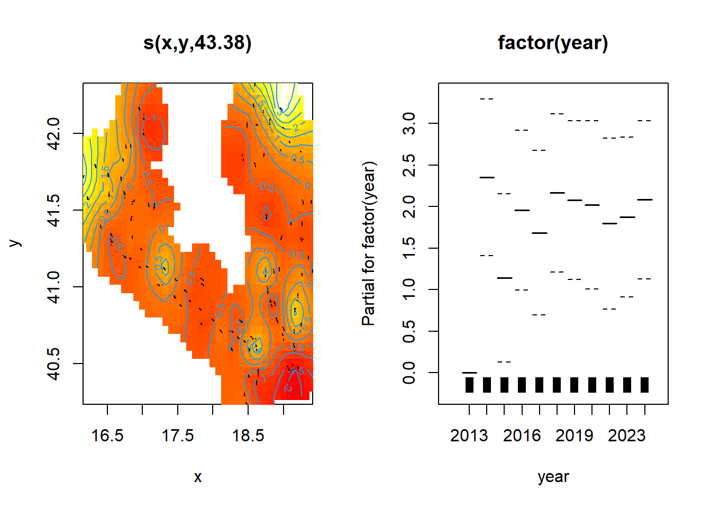
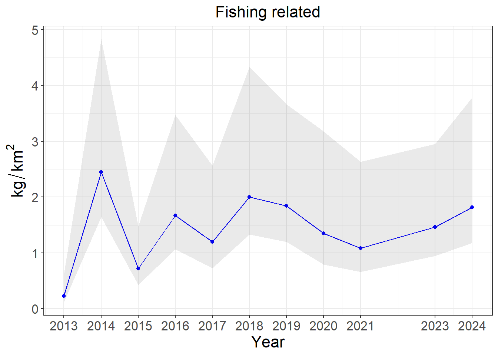
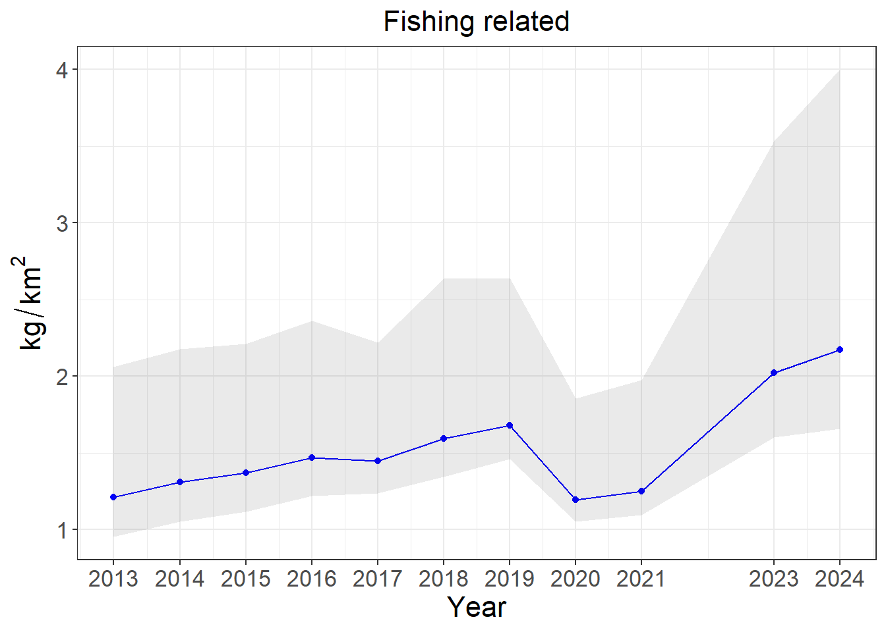
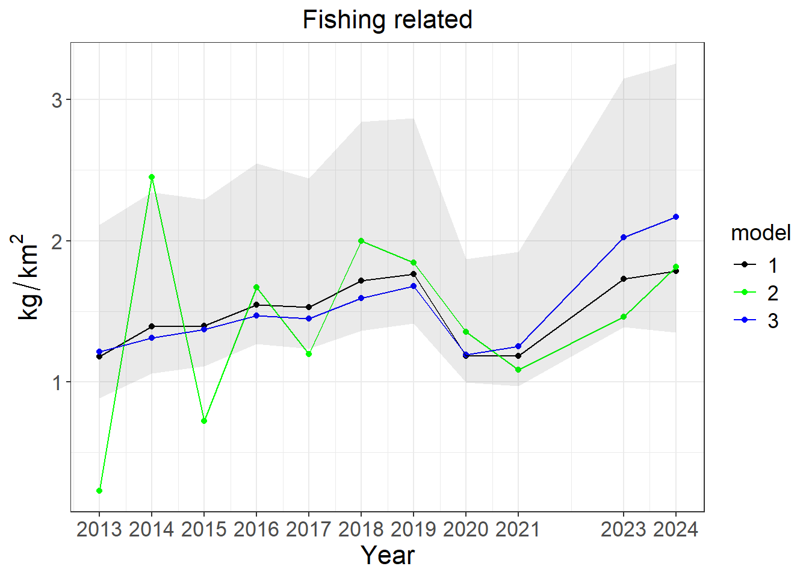

Compiled on 27/08/2025, 14:26Modelling analysis on Litter data
Introduction
This R Markdown template provides a flexible, parameter‑driven workflow for modelling the spatial and temporal distribution of marine litter recorded during scientific surveys. By editing only the small set of parameters that appears at the beginning of the script, such as the study period, the geographical area covered by the analysis, the litter category to be analysed, the response metric and so on, the same code can be rendered for any new case study without further modifications. The template expects two external csv files. The first file contains the observations: one row for every haul, with the haul date, geographical coordinates in decimal degrees, depth, the number and weight of litter items, and either the swept area or the tow duration so that the raw counts can be converted into density indices. The second file is a prediction grid that covers the study region with regularly spaced points; it stores the c-squares cell id, the centroid’ coordinates of each grid cell, depth and any stratification label relevant to the survey design. The resolution of the example grid is 0.05° x 0.05° (~5 km). These files can be replaced freely by the user. Before the statistical analysis begins the script derives a set of density indices (as items or kilograms per square kilometre and per hour) together with a binary presence–absence flag. For the chosen response variable the code fits three candidate Generalised Additive Models with the mgcv package. All models include a two‑dimensional smooth of longitude and latitude, while the temporal component is represented in three alternative ways: a thin‑plate spline of the continuous time variable, a simple factor that treats the year as a categorical effect, or a linear trend. Continuous density responses are modelled with a Tweedie distribution, whereas presence–absence data are handled with a binomial logit. Penalised REML estimation is adopted throughout, and an inflation factor of 1.4 is applied to the smoothing penalty to prevent against overfitting. Model performance is summarised by the percentage of deviance explained and by the Akaike Information Criterion. Once each model has been fitted the script predicts the response at each point of the grid for every survey year and stores the results as plain text. It also builds annual indices of abundance by resampling from the multivariate normal distribution of the model coefficients, which provide confidence intervals for the trend. Figures of the smooth terms, maps of the most recent three‑year average distribution and time‑series plots with confidence envelopes are saved as high‑resolution images, alongside serialised versions of the fitted models and all diagnostic statistics. Everything is written to the user‑defined results directory so that raw data, models and graphics remain clearly separated. To use the template the user only needs to supply an csv file of litter observation by category and a compatible prediction grid, modify the parameter block accordingly to those resources and render the document. The code mostly relies exclusively on CRAN packages (lubridate, dplyr, mgcv, mgcViz, ggplot2, MASS, sf and rnaturalearth) so the workflow can be reproduced on any standard R installation.
Description of the analysis
User defined data
In this section every variable that personalises a run is declared, so that the rest of the script can remain untouched and fully generic. First, two paths are set—one pointing to the folder where all outputs will be written (resdir), the other to the directory that holds the litter data post-classified in csv file format. Creating the results folder in advance avoids errors if it does not yet exist. Next come the temporal and spatial filters. ys lists the survey years that should be considered during the analysis, while AREA identifies the geographic unit (for instance a GSA or ICES subarea) to be extracted later from both the observation table and the prediction grid. The response metric is chosen with response. Five alternative indices are available: densities per square kilometre (n_km2, kg_km2), per hour (n_h, kg_h), or simple presence–absence (pa). category variable then tells the script which litter category, among those reclassified, will be isolated from the source data for modelling. Three numeric values follow. nBoot fixes how many Monte-Carlo replicates will be drawn when the script estimates confidence intervals for the annual indices; a larger number increases precision but lengthens computing time. seeds sets the random-number seed so that results are reproducible. mean_sept_area provides the mean swept area of a haul for the particular survey consideredin order to be attached to every cell of the prediction grid so that model outputs can be predicted on the same scale as the observations. Finally, ref_month chooses the calendar month that will define the temporal frame for the prediction grid, allowing the user to centre predictions on the season of interest.
# set results directory
wd <- "D:\\OneDrive - Coispa Tecnologia & Ricerca S.C.A.R.L\\SEAwise\\_____ARTICOLO_LITTER\\___Analysis_2025___\\Litter_SEAwise_quarto"
resdir <- file.path(wd, "output")
suppressWarnings(dir.create(resdir))
# set directory with data
data_dir <- file.path(wd, "input")
# set variables
ys <- c(2013:2021,2023,2024) # set the years of data to be used in the analysis
AREA <- "18" # select the geographic area, subarea, GSA for the analysis
response <- "kg_km2" # "n_km2" "kg_km2" "n_h" "kg_h" "pa"
category <- "FR"
nBoot <- 1000 # number of simulation for bootstrapping
seeds <- 42 # number of seeds for random functions
mean_sept_area <- 0.05196 # mean swept area value in the survey used to create a grid for model predictions
ref_month <- 7 # reference month for the predictive fridSet grid file
In this chunk the user assigns a file name to grid_file. By changing that single line the analyst can substitute a grid of different resolution, spatial extent or depth range without touching any of the statistical code that follows.
grid_file <- "grid_0.05_(0-800m)_GSA_csquare.csv"Selection of response variable
The chunk builds an expression describing the response variable selected by the user. The result, saved in index_expr, ensures that every axis title, legend and plot annotation later in the document automatically displays the correct unit without further editing when the analysis is rerun with a different response variable.
datasets <- category # name of the dataset to be loaded
datasets_label <- cats[cats$cats == category,2] # Label related to the selected category
# select response variable
index_expr <- switch(response,
"n_km2" = expression(n / km^2),
"kg_km2" = expression(kg / km^2),
"n_h" = "n/h",
"kg_h" = "kg/h",
"pa" = "p"
)Data loading
This step reads the survey file corresponding to the chosen litter category, converts every column name to lower-case for consistency, and inspects the first few rows to confirm that the import succeeded. Immediately afterwards it builds a time variable suitable for smooth modelling. The calendar date of each haul is reconstructed from the year, month and day fields and then converted to “day of year”; dividing by 365 rescales that count onto the interval 0–1, which is easier for a spline to handle. Adding this fractional component back to the integer year yields ctime, a continuous time stamp that increases smoothly from one haul to the next instead of jumping at the turn of each year.
# Load litter data (observations)
data <- read.table(file.path(data_dir, paste0(datasets,"_data.csv")), sep = ";", header = TRUE)
colnames(data) <- tolower(colnames(data))
head(data)# creation of ctime (continuous time) field
date <- paste(data$year,data$month,data$day,sep="-")
date <- yday(date)/365
data$yday <- date
data$ctime <- rowSums(data[,which(colnames(data) %in% c("year","yday"))])
NYEARS <- length(ys)Grid loading
This block imports the spatial prediction grid that underpins all maps and model projections. The grid file is read from the same data directory as the observations, using the file name defined earlier. Immediately after loading, the script filters the grid to retain only the cells whose area code matches the one specified in AREA field, ensuring that any subsequent predictions are confined to the study region of interest. A quick head(grid) prints the first few rows, allowing the user to verify that the grid looks correct before modelling begins.
# Load base grid
grid <- read.csv(file.path(data_dir,"grid_0.05_(0-800m)_GSA_csquare.csv"), sep = ";")
colnames(grid) <- c("id", "c_square", "x", "y", "AREA", "depth", "strata")
grid <- grid[grid$AREA == AREA, ]
head(grid)Grid expansion
At this stage the script turns the purely spatial grid into a spatio-temporal one by duplicating every cell for each survey year listed in ys. When the loop ends, the expanded grid replaces the original. A synthetic date string (always the first day of the chosen month) is then built for every grid row and transformed into “day of year”; dividing by 365 rescales that value to the unit interval. Adding this fraction to the integer year generates ctime, a continuous time stamp that parallels the one computed for the observations data, so the model can evaluate temporal smooths on the prediction grid as well. Finally, each grid row is informed with the variable swept, filled with the survey’s mean swept-area value. This constant offset allows predicted quantities, which are expressed per unit swept area, to be placed on the same scale as the observation densities.
g <- NULL
for (i in 1:length(ys)) {
gtemp <- grid
gtemp$year <- ys[i]
gtemp$month <- ref_month
if (i == 1) {
g <- gtemp
} else {
g <- rbind(g, gtemp)
}
}
grid <- g
date <- paste(grid$year, grid$month, "01", sep = "-")
date <- yday(date) / 365
grid$yday <- date
grid$ctime <- rowSums(grid[, which(colnames(grid) %in% c("year", "yday"))])
grid$swept <- mean_sept_areaModel setup
This chunk prepares everything the script needs in order to fit and compare the three alternative GAMs. It first builds an empty data‐frame called fm with six colum (formula, response, model number, dataset name, deviance explained, and AIC), so that summary statistics can be filled in after each model is fitted. The next two lines pre-populate the table: rows 1–3 are given the current response variable and the codes to label the three model variants. The core of the block constructs the model formulas themselves. Each one shares the same two-dimensional Duchon spline (s(x, y, bs = ‘ds’, m = c(1, 0.5), k = 128)) to describe spatial structure, and each includes offset(log(swept)) so that predicted values are scaled appropriately for effort. The only difference is how time enters the model:
- Continuous smoother: adds s(ctime, k = NYEARS, bs = ‘ds’, m = c(1, 0)), letting a smooth function capture gradual trends over the entire study period.
- Categorical year effect: replaces the spline with factor(year), treating each year as an independent level so that no assumption is made about continuity from one year to the next.
- Linear trend: inserts the single term ctime, forcing the temporal effect to be strictly linear.
Finally the three formulas are printed to the console so the analyst can verify them before the fitting step begins.
# create a data frame to store models' statistics
fm <- data.frame(matrix(ncol = 6, nrow = 0))
colnames(fm) <- c("formula", "response", "mod", "dataset", "dev.expl", "AIC")
fm[c(1:3), 2] <- response
fm[c(1:3), 3] <- seq(1:3)
# Definition of model formulas
## 1. Use of continuous time
fm[1, 1] <- paste0(response, " ~ s(x,y,bs = 'ds', m = c(1, 0.5),k=128) + s(ctime, k = ", NYEARS, ", bs = 'ds', m = c(1, 0)) + offset(log(swept))")
## 2. Year effect instead of spline
fm[2, 1] <- paste0(response, " ~ s(x,y,bs = 'ds', m = c(1, 0.5),k=128) + factor(year) + offset(log(swept))")
## 3. Linear effect of time
fm[3, 1] <- paste0(response, " ~ s(x,y,bs = 'ds', m = c(1, 0.5),k=128) + ctime + offset(log(swept))")
fm[1, 1][1] "kg_km2 ~ s(x,y,bs = 'ds', m = c(1, 0.5),k=128) + s(ctime, k = 11, bs = 'ds', m = c(1, 0)) + offset(log(swept))"fm[2, 1][1] "kg_km2 ~ s(x,y,bs = 'ds', m = c(1, 0.5),k=128) + factor(year) + offset(log(swept))"fm[3, 1][1] "kg_km2 ~ s(x,y,bs = 'ds', m = c(1, 0.5),k=128) + ctime + offset(log(swept))"selection of the response variable
After importing the raw haul table the script computes all five candidate response indices in a single step. Two of them (n_km2 and kg_km2) are obtained by dividing the item counts and masses by the swept area of each haul, giving densities per square kilometre. Two more (n_h and kg_h) standardise the same quantities by haul duration, producing densities per hour. A binary presence–absence flag, pa, is also created by assigning a value of one to hauls where at least one item was caught and zero otherwise. This code guarantees that whichever index the user selected in the parameter block (response) will already exist as a column in the dataset used.
dname <- datasets
d <- data.frame(data)
d$n_km2 <- d$n / d$swept
d$kg_km2 <- d$kg / d$swept
d$n_h <- d$n / d$duration
d$kg_h <- d$kg / d$duration
d$pa <- 0
d[d$n > 0, "pa"] <- 1
d[d$n == 0, "pa"] <- 0
fm[, "dataset"] <- dnameAnalysis on Model 1
Model fitting
This first fitting step takes the formula prepared for Model 1 (the version that uses a continuous temporal spline) and feeds it to mgcv::gam. Before the call, a results table called ts_tab is allocated: one row per survey year and separate columns ready to store the three models’ yearly means, confidence limits and coefficients of variation. The object m is set to 1 so the rest of the script knows which row of the formula matrix to pull from. The conditional block chooses the appropriate likelihood according to the response variable the user selected earlier. Presence–absence (pa) triggers a binomial logit specification; any of the continuous density indices triggers the Tweedie (tw()) family. In every case the model is estimated by REML and the smoothing penalty is inflated with gamma = 1.4, helping to prevent over-fitting when data are sparse.
ts_tab <- data.frame(matrix(ncol = 13, nrow = length(ys)))
colnames(ts_tab) <- c("year", "mean_1", "lower_1", "higher_1", "mean_2", "lower_2", "higher_2", "mean_3", "lower_3", "higher_3", "cv1","cv2","cv3")
m=1 # to select model 1
# fitting
if (response == "pa") {
mod <- suppressWarnings(gam(formula(fm[m, "formula"]), family = binomial("logit"), method = "REML", data = d, gamma=1.4))
} else if (response == "n_km2") {
mod <- suppressWarnings(gam(formula(fm[m, "formula"]), tw(), method = "REML", data = d, gamma=1.4))
} else if (response == "kg_km2") {
mod <- suppressWarnings(gam(formula(fm[m, "formula"]), method = "REML", tw(), data = d, gamma=1.4))
} else if (response == "n_h") {
mod <- suppressWarnings(gam(formula(fm[m, "formula"]), tw(), method = "REML", data = d, gamma=1.4))
} else if (response == "kg_km2") {
mod <- suppressWarnings(gam(formula(fm[m, "formula"]), method = "REML", tw(), data = d, gamma=1.4))
}
# save gam model object
saveRDS(mod, file.path(resdir, paste0(dname, "_", fm[m, "response"], "_", fm[m, "mod"], "_MODEL.rds")))Saving model diagnostics
# save model summary
sum <- summary(mod); sum
Family: Tweedie(p=1.665)
Link function: log
Formula:
kg_km2 ~ s(x, y, bs = "ds", m = c(1, 0.5), k = 128) + s(ctime,
k = 11, bs = "ds", m = c(1, 0)) + offset(log(swept))
Parametric coefficients:
Estimate Std. Error t value Pr(>|t|)
(Intercept) 2.40393 0.09264 25.95 <2e-16 ***
---
Signif. codes: 0 '***' 0.001 '**' 0.01 '*' 0.05 '.' 0.1 ' ' 1
Approximate significance of smooth terms:
edf Ref.df F p-value
s(x,y) 45.031 127 2.106 <2e-16 ***
s(ctime) 1.884 10 0.436 0.0476 *
---
Signif. codes: 0 '***' 0.001 '**' 0.01 '*' 0.05 '.' 0.1 ' ' 1
R-sq.(adj) = 0.0456 Deviance explained = 40%
-REML = 926.21 Scale est. = 7.0323 n = 953 sink(file.path(resdir, paste0(dname, "_", fm[m, "response"], "_", fm[m, "mod"], "_summary.txt")))
print(sum)
print(paste("AIC: ", AIC(mod)))
sink()
# store model statistics in fm table
fm[m, "dev.expl"] <- round(sum$dev.expl * 100, 2)
fm[m, "AIC"] <- AIC(mod); AIC(mod)[1] 2524.529 # visualisation plot of splines
par(mfrow = c(1, 2))
plot(mod, all.terms = TRUE, scheme = 2, shade = TRUE) # save plot of splines
b <- getViz(mod)
jpeg(paste(resdir, paste0(dname, "_", fm[m, 2], "_", fm[m, "mod"], "_splines.jpg"), sep = "/"), width = 3000, height = 1500, res = 300)
par(mfrow = c(1, 2))
plot(mod, all.terms = TRUE, scheme = 2, shade = TRUE)
dev.off()png
2 Model predictions
This section captures a complete diagnostic picture of the model immediately after it has been fitted. First, summary(mod) is computed and printed to the console so the user can see the principal statistics interactively. The same summary, together with the numeric value of the model’s Akaike Information Criterion, is redirected to a text file for later reference. The model performances are evaluated on the base of percentage deviance explained and AIC, repectivelly reported into the corresponding row of the fm table in order to make later comparisons quicker. The code produces a pair of diagnostic plots that display the fitted spatial smooth and the temporal effect respectivelly. They are first drawn to the current graphics device for on-screen inspection and then exported at high resolution to a JPEG file.
# predictions + maps plot
grid$pred <- NA
grid$pred <- predict(mod, newdata = grid, type = "response")
head(grid) # write.table(grid, file.path(data_dir, paste0("Litter_", dname, "_", fm[m, 2], "_", fm[m, 3], ".csv")), sep = ";", row.names = FALSE)
write.table(grid, file.path(resdir, paste0("Litter_", dname, "_", fm[m, 2], "_", fm[m, 3], ".csv")), sep = ";", row.names = FALSE)Averaging distribution maps
This chunk summarises the model’s spatial predictions into a single map that illustrates how litter density is currently distributed. It first identifies the last three survey years and extracts from the expanded grid only the rows that belong to those years. Grouping by grid cell, it averages the predicted values across the three slices, yielding one mean estimate per cell (mean). Coastlines are added with rnaturalearth so that land–sea boundaries are clear. The map itself is drawn with ggplot2: each grid cell is a tile coloured by its mean predicted density on a Viridis scale. Customised font sizes ensure that labels remain legible in the exported figure. Finally, the graphic is printed to the R graphics device for immediate inspection and saved twice—once as a high-resolution JPEG for reports and once as a serialised ggplot object (.rds) in case the user wants to re-open or modify the map later without re-running the entire script.
# map of average model estimations for the latest three years
last_ys <- sort(ys)[(length(ys)-2):length(ys)]
map <- grid[grid$year %in% last_ys, ]
map <- map %>% group_by(c_square, x,y) %>% summarise(mean = mean(pred, na.rm=TRUE))
xmin <- min(map$x)
xmax <- max(map$x)
ymin <- min(map$y)
ymax <- max(map$y)
xl <- c(xmin - (xmax - xmin) * 0.05, xmax + (xmax - xmin) * 0.05)
yl <- c(ymin - (ymax - ymin) * 0.05, ymax + (ymax - ymin) * 0.05)
x_breaks <- c(round(xmin, 0), round(xmin, 0) + round((xmax - xmin) / 2, 0), round(xmin, 0) + 2 * round((xmax - xmin) / 2, 0))
y_breaks <- c(round(ymin, 0), round(ymin, 0) + round((ymax - ymin) / 2, 0), round(ymin, 0) + 2 * round((ymax - ymin) / 2, 0))
library(sf)
library(rnaturalearth)
library(rnaturalearthdata)
world <- ne_countries(scale = "large", returnclass = "sf")
# world <- map_data("world")
p1 <- ggplot() +
geom_tile(data = map, aes_string(x = "x", y = "y", fill = "mean")) +
scale_fill_viridis_c(option = "D", direction = -1) +
scale_x_continuous(breaks = x_breaks) +
scale_y_continuous(breaks = y_breaks) +
geom_sf(data = world, fill = "lightgrey", color = "darkgrey", linewidth = 0.3) +
coord_sf(xlim = xl, ylim = yl, expand = FALSE) +
theme_bw() +
xlab("Longitude") +
ylab("Latitude") +
labs(fill = index_expr) +
ggtitle(paste0(datasets_label)) +
theme(
plot.title = element_text(size = 16, hjust = 0.5),
axis.title = element_text(size = 16),
axis.text = element_text(size = 13),
legend.title = element_text(size = 14),
legend.text = element_text(size = 13)
)
print(p1)
ggsave(paste(resdir, paste0(datasets,"_",response,"_",fm[m,"mod"],"_MAP.jpg"), sep = "/"), dpi = 300, width = 9, height = 7)
saveRDS(p1,paste(resdir, paste0(datasets,"_",response,"_",fm[m,"mod"],"_MAP.rds"), sep = "/"))Uncertainty estimation
The analysis at this stage generates haul-level predictions from the fitted GAM, replacing the observed response column with model-based values so that each haul retains its original covariates and sampling design. Afterwards, it moves on to quantify uncertainty. The code produces values for model predictions at haul level, then, year by year, draws a number (nBoot=1000) random coefficient sets from the GAM’s multivariate-normal posterior. Each draw yields a new set of haul densities; averaging these within the year produces a distribution of possible annual means. From that distribution the script stores the point estimate, a 95 % confidence interval, and a coefficient of variation, placing the results in a summary table.
# model prediction at the survey stations
hauls <- d
hauls[,which(colnames(hauls)==response)] <- predict(mod, type = "response")
# simulation from the posterior distribution and calculation of the linear predictor (the right-hand side of GAM equation) for each simulation
if (fm[m, "dev.expl"] > 0) {
cat("- Estimation of time series' 95% confidence interval: \n")
cat(paste(dname, ", ", fm[m, 2], ", model", fm[m, "mod"], "\n"))
# create data frame of the time series
ts <- data.frame(matrix(ncol = 5, nrow = length(ys)))
colnames(ts) <- c("year", "mean", "lower", "higher", "cv")
# predictions by year
y=1
for (y in 1:length(ys)) {
n.row <- nrow(hauls[hauls$year==ys[y],])
Xp.1 = predict(mod, newdata = hauls[hauls$year==ys[y],], type = "lpmatrix")
OS.pos = numeric(nrow(hauls[hauls$year==ys[y],]))
terms.pos = terms(mod)
Xp.1 <- predict(mod, newdata = hauls[hauls$year==ys[y],], type = "lpmatrix")
brp.1 <- mvrnorm(n = nBoot, coef(mod), mod$Vp)
rep1 <- exp(Xp.1 %*% t(brp.1))
cv <- round(apply(rep1, 1, function(x) sd(x) / mean(x)), 2)
cv <- mean(cv)
if (!is.null(mod$offset)) {
off.num.pos <- attr(terms.pos, "offset")
for (i in off.num.pos) OS.pos <- OS.pos + eval(attr(terms.pos,"variables")[[i + 1]], hauls[hauls$year==ys[y],])
}
p.1 = Xp.1 %*% coef(mod) + OS.pos
gPred = exp(p.1)
pred_year = sum(exp(p.1))/n.row
brp.1 = mvrnorm(n = nBoot, coef(mod), mod$Vp)
OS.pos = matrix(0, nrow(hauls[hauls$year==ys[y],]), nBoot)
terms.pos = terms(mod)
if (!is.null(mod$offset)) {
off.num.pos <- attr(terms.pos, "offset")
for (i in off.num.pos) OS.pos <- OS.pos + eval(attr(terms.pos,"variables")[[i + 1]], hauls[hauls$year==ys[y],])
}
rep1 = data.frame(exp(Xp.1 %*% t(brp.1) + OS.pos))
idxSamp = as.numeric(colSums(rep1))/n.row
halpha = (1 - 0.95)/2
hi <- quantile(idxSamp, 1 - halpha, na.rm = TRUE)
lo <- quantile(idxSamp, halpha, na.rm = TRUE)
ts[y, 1] <- ys[y]
ts[y, 2] <- pred_year
ts[y, 3] <- lo
ts[y, 4] <- hi
ts[y, 5] <- cv
}
# table containing time series for all the 3 models
if (fm[m,"mod"]==1) {
ts_tab[,c(1:4)] <- ts[,c(1:4)]
ts_tab[,11] <- ts[,5]
} else if (fm[m,"mod"]==2) {
ts_tab[,c(5:7)] <- ts[,c(2:4)]
ts_tab[,12] <- ts[,5]
} else if (fm[m,"mod"]==3) {
ts_tab[,c(8:10)] <- ts[,c(2:4)]
ts_tab[,13] <- ts[,5]
}
head(ts_tab)
}- Estimation of time series' 95% confidence interval:
FR , kg_km2 , model 1 Timeseries plot
The code constructs a time-series figure that displays the model’s annual abundance index together with its uncertainty. it takes the bootstrap table ts, plots each yearly mean as a blue point joined by a blue line, and draws a semi-transparent ribbon spanning the 95 % confidence limits. All survey years are shown on the x-axis. After printing the plot to the screen, the script saves it twice: a high-resolution JPEG for reports and an .rds file that preserves the ggplot object for later editing without having to rerun the analysis.
## plot of time series
if (fm[m, "dev.expl"] > 0) {
max_val <- max(ts$higher,na.rm=TRUE)
p2 <- ggplot()+
geom_point(ts,mapping=aes(year,mean),color="blue")+
geom_line(ts,mapping=aes(year,mean),color="blue")+
geom_ribbon(ts,mapping=aes(ymin=lower,ymax=higher,x=year), alpha = 0.1)+
scale_x_continuous(breaks = ys)+
theme_bw() +
theme(
plot.title = element_text(size = 16, hjust = 0.5), # titolo grafico
axis.title = element_text(size = 16), # titoli assi
axis.text = element_text(size = 13), # etichette assi
legend.title = element_text(size = 14), # titolo legenda
legend.text = element_text(size = 13) # testo legenda
)+
xlab("Year") +
ylab(index_expr)+
ggtitle(paste(datasets_label)) +
theme(plot.title = element_text(hjust = 0.5))
print(p2)
ggsave(paste(resdir, paste0(dname, "_", fm[m, 2], "_", fm[m, 3], "_TimeSeries_CI.jpg"), sep = "/"), dpi = 300, width = 9, height = 7)
saveRDS(p2,paste(resdir, paste0(dname, "_", fm[m, 2], "_", fm[m, 3], "_TimeSeries_CI.rds"), sep = "/"))
} # if dev.exp > 0
Analysis on Model 2
The workflow shown for Model 1 is executed again—line for line for Model 2 (spatial smooth + categorical year) and Model 3 (spatial smooth + linear trend). Each model is fitted with the correct family, its object and summary are saved, diagnostic splines are plotted, grid-level predictions and three-year maps are saved out, bootstrap time-series indices are generated, and the same JPEG/RDS files are exported. At each pass the master tables fm and ts_tab are updated so that, once all three loops finish, the user have a complete and directly comparable set of outputs for every candidate model.
Family: Tweedie(p=1.663)
Link function: log
Formula:
kg_km2 ~ s(x, y, bs = "ds", m = c(1, 0.5), k = 128) + factor(year) +
offset(log(swept))
Parametric coefficients:
Estimate Std. Error t value Pr(>|t|)
(Intercept) 0.5843 0.3921 1.490 0.136504
factor(year)2014 2.3544 0.4710 4.999 6.92e-07 ***
factor(year)2015 1.1406 0.5065 2.252 0.024558 *
factor(year)2016 1.9597 0.4807 4.077 4.98e-05 ***
factor(year)2017 1.6854 0.4949 3.406 0.000689 ***
factor(year)2018 2.1659 0.4770 4.541 6.37e-06 ***
factor(year)2019 2.0793 0.4779 4.351 1.51e-05 ***
factor(year)2020 2.0204 0.5073 3.983 7.37e-05 ***
factor(year)2021 1.7955 0.5151 3.486 0.000515 ***
factor(year)2023 1.8752 0.4800 3.907 0.000100 ***
factor(year)2024 2.0826 0.4754 4.381 1.32e-05 ***
---
Signif. codes: 0 '***' 0.001 '**' 0.01 '*' 0.05 '.' 0.1 ' ' 1
Approximate significance of smooth terms:
edf Ref.df F p-value
s(x,y) 43.38 127 1.933 <2e-16 ***
---
Signif. codes: 0 '***' 0.001 '**' 0.01 '*' 0.05 '.' 0.1 ' ' 1
R-sq.(adj) = 0.0886 Deviance explained = 41.5%
-REML = 918.53 Scale est. = 6.9499 n = 953[1] 2513.903
png
2 
Analysis on Model 3
The workflow shown for Model 1 and 2 is executed again—line for line for Model 3 (spatial smooth + linear trend). At each step the master tables fm and ts_tab are updated so that, once all three loops finish, the user have a complete and directly comparable set of outputs for every candidate model.
Family: Tweedie(p=1.666)
Link function: log
Formula:
kg_km2 ~ s(x, y, bs = "ds", m = c(1, 0.5), k = 128) + ctime +
offset(log(swept))
Parametric coefficients:
Estimate Std. Error t value Pr(>|t|)
(Intercept) -104.33999 50.93025 -2.049 0.0408 *
ctime 0.05288 0.02523 2.096 0.0363 *
---
Signif. codes: 0 '***' 0.001 '**' 0.01 '*' 0.05 '.' 0.1 ' ' 1
Approximate significance of smooth terms:
edf Ref.df F p-value
s(x,y) 44.57 127 2.095 <2e-16 ***
---
Signif. codes: 0 '***' 0.001 '**' 0.01 '*' 0.05 '.' 0.1 ' ' 1
R-sq.(adj) = 0.0365 Deviance explained = 39.5%
-REML = 928.09 Scale est. = 7.0845 n = 953[1] 2518.295png
2 
Merging plots and results
At the very end of the script everything comes together. The bootstrap table ts_tab, which now holds the annual indices and confidence limits for all three candidate models, is reshaped into a long format so that the three trajectories are reported on the same column. ggplot is then called to build a comparative time-series figure. Each model’s curve is shown as points and lines, coloured black for Model 1, green for Model 2 and blue for Model 3. If Model 1 produced confidence limits, its ribbon is added in semi-transparent grey beneath the three lines to give a visual gauge of uncertainty. After rendering to the screen the plot is exported in two forms: a high-resolution JPEG for static reporting and an RDS object that preserves the ggplot object for future editing. Finally, two comma-separated files are written to the results directory. The first (e.g. Results_summary_n_km2_SUP.csv) stores the fm table, which summarises deviance explained and AIC for each model; the second ( Time_series_n_km2_SUP.csv) contains the complete bootstrap table ts_tab. These text files give a concise record of model performance and yearly indices that can be inspected or imported into other software without opening R.
# plot time series of the three models together
ts_tab$year <- ys
ts_long <- reshape2::melt(ts_tab[,c(1,2,5,8)],id.vars="year")
ts_long$model <- substr(as.character(ts_long$variable),nchar(as.character(ts_long$variable)),nchar(as.character(ts_long$variable)))
ts_long <- ts_long[!is.na(ts_long$value),]
if (fm[1, "dev.expl"] > 0) {
p3 <- ggplot()+
geom_point(ts_long,mapping=aes(year,value,color=model))+
geom_line(ts_long,mapping=aes(year,value,color=model))+
scale_color_manual(values = c("1" = "black", "2" = "green","3"="blue"))+
geom_ribbon(ts_tab,mapping=aes(ymin=lower_1,ymax=higher_1,x=year), alpha = 0.1)+
scale_x_continuous(breaks = ys)+
theme_bw() +
theme(
plot.title = element_text(size = 16, hjust = 0.5),
axis.title = element_text(size = 16),
axis.text = element_text(size = 13),
legend.title = element_text(size = 14),
legend.text = element_text(size = 13)
) +
xlab("Year") +
ylab(index_expr)+
ggtitle(paste(datasets_label))+
theme(plot.title = element_text(hjust = 0.5))
} else {
p3 <- ggplot()+
geom_point(ts_long,mapping=aes(year,value,color=model))+
geom_line(ts_long,mapping=aes(year,value,color=model))+
scale_color_manual(values = c("1" = "black", "2" = "green","3"="blue"))+
scale_x_continuous(breaks = ys)+
theme_bw() +
theme(
plot.title = element_text(size = 16, hjust = 0.5),
axis.title = element_text(size = 16),
axis.text = element_text(size = 13),
legend.title = element_text(size = 14),
legend.text = element_text(size = 13)
) +
xlab("Year") +
ylab(index_expr)+
ggtitle(paste(datasets_label))+
theme(plot.title = element_text(hjust = 0.5))
}
print(p3)
ggsave(paste(resdir, paste0(dname, "_", response, "_TimeSeries_CI_models.jpg"), sep = "/"), dpi = 300, width = 9, height = 7)
saveRDS(p3,paste(resdir, paste0(dname, "_", response, "_TimeSeries_CI_models.rds"), sep = "/"))
write.table(fm, file.path(resdir, paste0("Results_summary_",response,"_",datasets,".csv")), sep = ";", row.names = FALSE)
ts_tab$area = AREA
write.table(ts_tab, file.path(resdir, paste0("_Time_series_",response,"_",datasets,".csv")), sep = ";", row.names = FALSE)